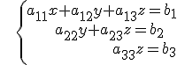
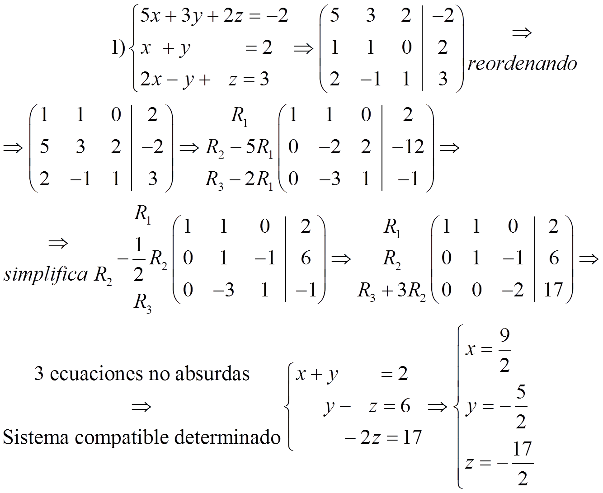
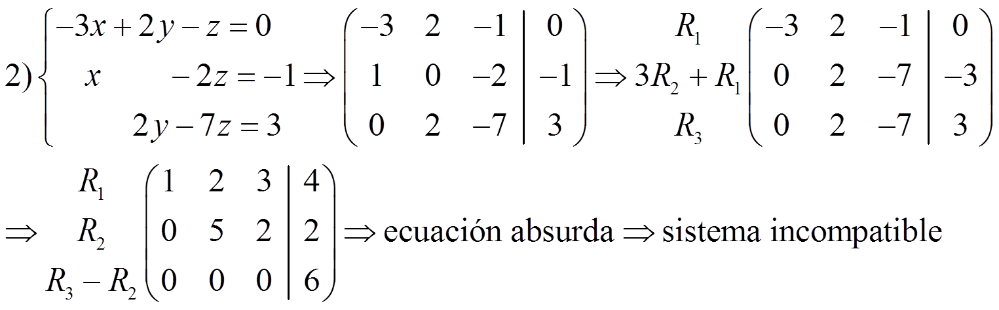
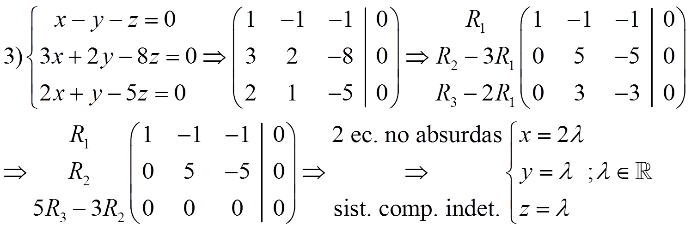
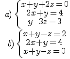

Ecuaciones y sistemas
método de Gauss
El método de Gauss es una generalización del método de reducción. El objetivo es, usando operaciones elementales, conseguir un sistema escalonado:

Este tipo de sistemas nos permiten obtener de forma sencilla la solución.
Si hay ecuaciones absurdas (0z=7 por ejemplo) el sistema es incompatible.
Si hay ecuaciones triviales (0z=0 por ejemplo) las eliminamos.
Al final si quedan tres ecuaciones no absurdas el sistema es compatible determinado y si quedan menos de tres el sistema es compatible indeterminado.
NOTA: intenta siempre reordenar el sistema para que a11= ±1
Ejemplos:



Ejercicio. Resuelve:

Soluciones: a) x = 2, y = 0, z = -1; b) x = 3, y = -2, z = 1
Obra publicada con Licencia Creative Commons Reconocimiento No comercial Compartir igual 3.0